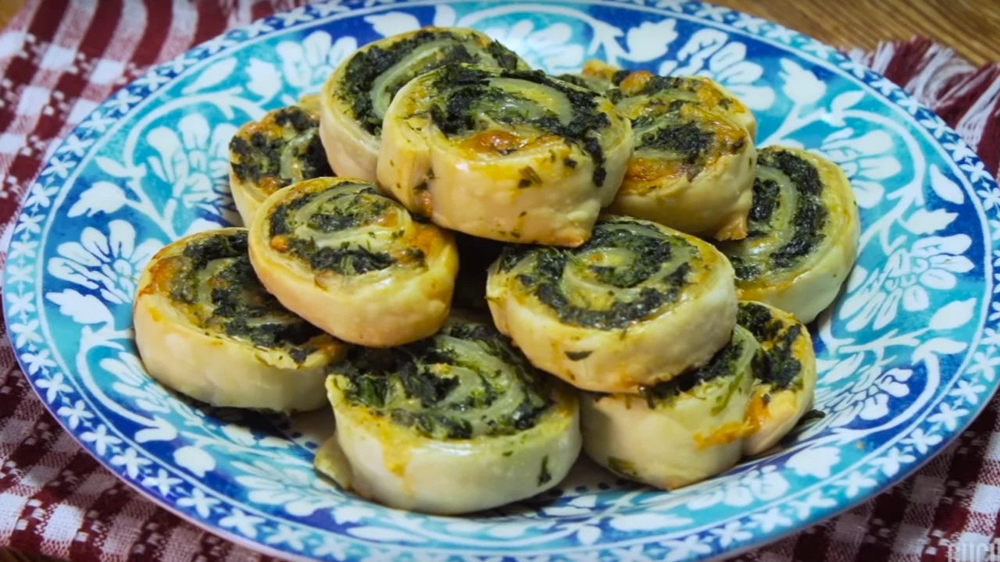

Rolls de Espinaca

Ingredientes
Para la masa
- Harina 0000 o 000 1/2 kg.
- Levadura fresca 20 g.
- Azúcar 1 cdita.
- Leche tibia 1 cdita #Tip para que leve bien.
- Sal fina 1 cdita.
- Huevo 1 unid.
- Leche 200/250 cc.
- Manteca 70 g.
Para el relleno
- Espinaca o acelga.
- Cebollas medianas 3 unid.
- Queso duro de rallar.
Procedimiento
- Agregar todos los ingredientes (menos la manteca) para la masa en un bowl, mezclar y amasar bien.
- Cuando estén todos los ingredientes unidos, agregar la manteca.
- Golpear la masa contra la mesada. #Tip: Los golpes le cambian la textura a la masa.
- Dejar leudar la masa por 1 hora y media en la heladera.
- Lavar bien la espinaca, y saltear o cocinar un poquito en una olla con agua.
- Caramelizar las cebollas.
- Estirar la masa bien finita y agregar el queso duro de rallar, la espinaca y la cebolla caramelizada y
un poco más de queso rallado. #Tip: Secar bien la espinaca o la acelga para que no te humedezca la masa.
- Enmantecar y enharinar un molde desmontable.
- Cerrar la masa como pionono hasta el final y unir bien. Cortar en pedazos de 4cm y colocar en el molde.
#Opcional: podés cortarlos individuales y colocarlos en una placa, como por ejemplo para acompañar
ensaladas.